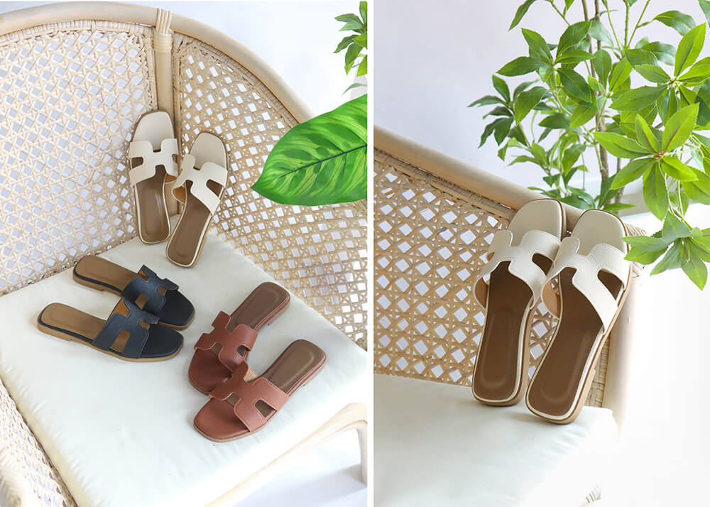
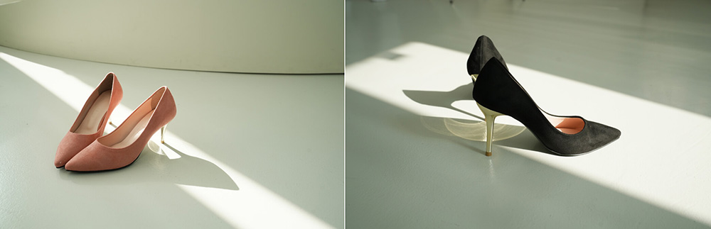
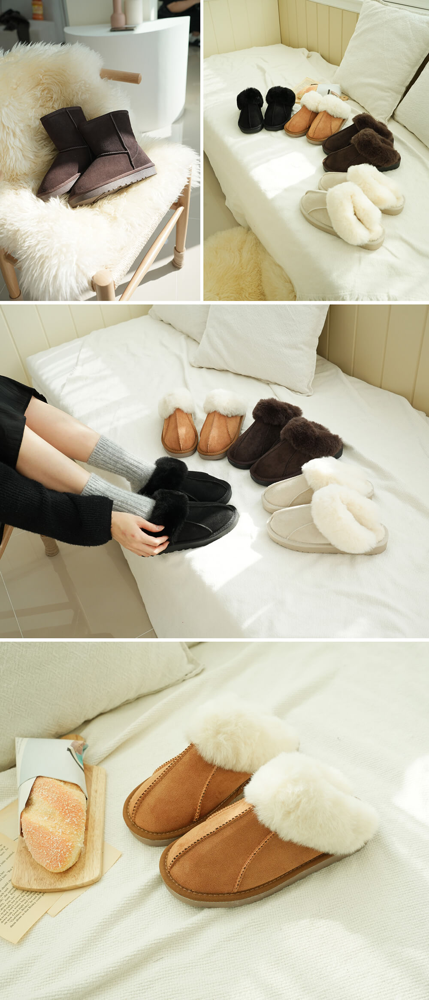
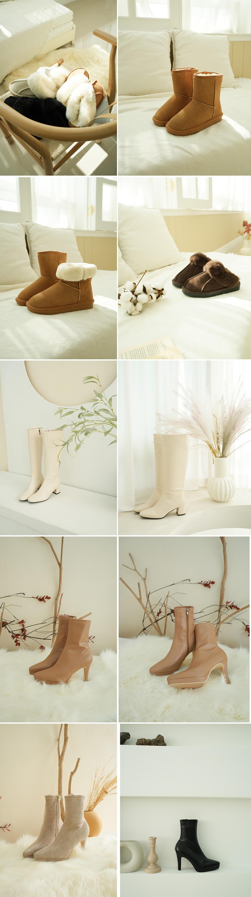
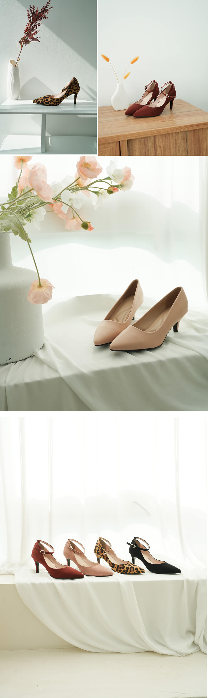
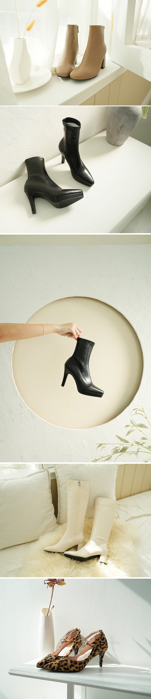

촬영 디렉팅 / 광고 비주얼
촬영 디렉팅 기반 광고 비주얼 촬영
DSLR
프로젝트 정보
역할
촬영 디렉팅 및 콘텐츠 촬영, 현장 연출 기획, 광고 비주얼 제작
연도
2024~2026
유형
실무프로젝트
분야
촬영 디렉팅 / 콘텐츠 제작 / 광고 비주얼
기여도
100%
01
프로젝트 개요
제품의 매력을 효과적으로 전달하기 위해 촬영 현장에서 연출 기획과 촬영을 주도적으로 진행한 프로젝트입니다. 제품 콘셉트에 맞는 촬영 연출을 기획하고 현장에서 소품을 직접 선별·세팅하여 비주얼 완성도를 높였습니다. 또한 다양한 광고 활용이 가능한 비주얼 콘텐츠 발굴을 목표로 촬영을 진행했으며, 아래 이미지는 실제 촬영 현장에서 직접 연출하고 촬영한 결과물입니다. 제작된 비주얼은 실제 광고 소재로 활용되어 광고 성과 개선과 매출 증대에도 기여했습니다.
02
프로젝트 완성
< 직접 촬영한 이미지 입니다 >






03
주요작업
1. 촬영 콘셉트 기반 현장 연출 기획 2. 제품에 어울리는 소품 선별 및 촬영 세팅 구성 3. 포토팀 연출 디렉팅 및 촬영 진행 4. 필요한 컷 직접 연출 및 촬영 5. 광고 활용을 위한 비주얼 소재 발굴 6. 광고팀과 협업하여 광고 콘텐츠 제작에 활용
05
인사이트
촬영 현장에서 직접 연출과 촬영을 진행하며 제품의 특징을 가장 효과적으로 전달할 수 있는 비주얼 요소를 빠르게 판단하고 구현하는 경험을 쌓았습니다. 또한 포토팀과 광고팀 간 협업을 통해 촬영 결과물이 실제 광고 소재로 활용될 수 있도록 비주얼 방향성을 고려하는 것이 중요하다는 점을 배웠습니다.